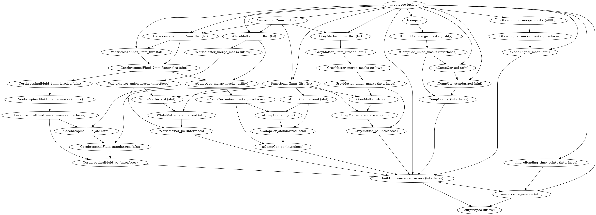
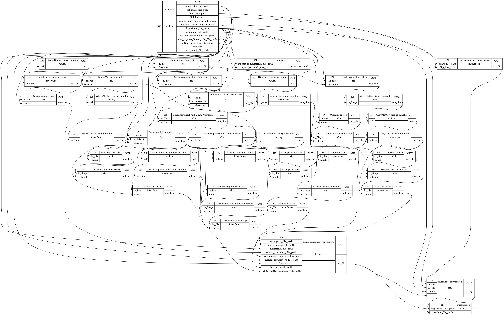

Nuisance Signal Removal¶
-
CPAC.nuisance.create_nuisance_workflow(nuisance_selectors, use_ants, name='nuisance')[source]¶ Workflow for the removal of various signals considered to be noise from resting state fMRI data. The residual signals for linear regression denoising is performed in a single model. Therefore the residual time-series will be orthogonal to all signals.
Parameters: - nuisance_selectors – dictionary describing nuisance regression to be performed
- use_ants – flag indicating whether FNIRT or ANTS is used
- name – Name of the workflow, defaults to ‘nuisance’
Returns: nuisance : nipype.pipeline.engine.Workflow Nuisance workflow.
Workflow Inputs:
inputspec.functional_file_path : string (nifti file) Path to realigned and motion corrected functional image (nifti) file. inputspec.functional_brain_mask_file_path : string (nifti file) Whole brain mask corresponding to the functional data. inputspec.anatomical_file_path : string (nifti file) Corresponding preprocessed anatomical. inputspec.wm_mask_file_path : string (nifti file) Corresponding white matter mask. inputspec.csf_mask_file_path : string (nifti file) Corresponding cerebral spinal fluid mask. inputspec.gm_mask_file_path : string (nifti file) Corresponding grey matter mask. inputspec.lat_ventricles_mask_file_path : string (nifti file) Mask of lateral ventricles calculated from the Harvard Oxford Atlas. inputspec.mni_to_anat_linear_xfm_file_path: string (nifti file) FLIRT Linear MNI to Anat transform inputspec.anat_to_mni_initial_xfm_file_path: string (nifti file) ANTS initial transform from anat to MNI inputspec.anat_to_mni_rigid_xfm_file_path: string (nifti file) ANTS rigid (6 parameter, no scaling) transform from anat to MNI inputspec.anat_to_mni_affine_xfm_file_path: string (nifti file) ANTS affine (13 parameter, scales and shears) transform from anat to MNI inputspec.func_to_anat_linear_xfm_file_path: string (nifti file) FLIRT Linear Transform between functional and anatomical spaces inputspec.motion_parameter_file_path : string (text file) Corresponding rigid-body motion parameters. Matrix in the file should be of shape (`T`, `R`), `T` time points and `R` motion parameters. inputspec.fd_j_file_path : string (text file) Framewise displacement calculated from the volume alignment. inputspec.fd_p_file_path : string (text file) Framewise displacement calculated from the motion parameters. inputspec.dvars_file_path : string (text file) DVARS calculated from the functional data. inputspec.selector : Dictionary containing configuration parameters for nuisance regression. To not run a type of nuisance regression, it may be ommited from the dictionary. selector = { aCompCor: { summary: { method: 'DetrendPC', aCompCor will always extract the principal components from detrended tissues signal, components: number of components to retain, }, tissues: list of tissues to extract regressors. Valid values are: 'WhiteMatter', 'CerebrospinalFluid', extraction_resolution: None | floating point value indicating isotropic resolution (ex. 2 for 2mm x 2mm x 2mm that data should be extracted at, the corresponding tissue mask will be resampled to this resolution. The functional data will also be resampled to this resolution, and the extraction will occur at this new resolution. The goal is to avoid contamination from undesired tissue components when extracting nuisance regressors, erode_mask: True | False, whether or not the mask should be eroded to further avoid a mask overlapping with a different tissue class, include_delayed: True | False, whether or not to include a one-frame delay regressor, default to False, include_squared: True | False, whether or not to include a squared regressor, default to False, include_delayed_squared: True | False, whether or not to include a squared one-frame delay regressor, default to False, }, tCompCor: { summary: { method: 'PC', tCompCor will always extract the principal components from BOLD signal, components: number of components to retain, }, threshold: floating point number = cutoff as raw variance value, floating point number followed by SD (ex. 1.5SD) = mean + a multiple of the SD, floating point number followed by PCT (ex. 2PCT) = percentile from the top (ex is top 2%), by_slice: True | False, whether or not the threshold criterion should be applied by slice or across the entire volume, makes most sense for thresholds using SD or PCT, include_delayed: True | False, include_squared: True | False, include_delayed_squared: True | False, }, WhiteMatter: { summary: { method: 'PC', 'DetrendPC', 'Mean', 'NormMean' or 'DetrendNormMean', components: number of components to retain, if PC, }, extraction_resolution: None | floating point value (same as for aCompCor), erode_mask: True | False (same as for aCompCor), include_delayed: True | False (same as for aCompCor), include_squared: True | False (same as for aCompCor), include_delayed_squared: True | False (same as for aCompCor), }, CerebrospinalFluid: { summary: { method: 'PC', 'DetrendPC', 'Mean', 'NormMean' or 'DetrendNormMean', components: number of components to retain, if PC, }, extraction_resolution: None | floating point value (same as for aCompCor), erode_mask: True | False (same as for aCompCor), include_delayed: True | False (same as for aCompCor), include_squared: True | False (same as for aCompCor), include_delayed_squared: True | False (same as for aCompCor), }, GreyMatter: { summary: { method: 'PC', 'DetrendPC', 'Mean', 'NormMean' or 'DetrendNormMean', components: number of components to retain, if PC, }, extraction_resolution: None | floating point value (same as for aCompCor), erode_mask: True | False (same as for aCompCor), include_delayed: True | False (same as for aCompCor), include_squared: True | False (same as for aCompCor), include_delayed_squared: True | False (same as for aCompCor), }, GlobalSignal: { summary: { method: 'PC', 'DetrendPC', 'Mean', 'NormMean' or 'DetrendNormMean', components: number of components to retain, if PC, }, include_delayed: True | False (same as for aCompCor), include_squared: True | False (same as for aCompCor), include_delayed_squared: True | False (same as for aCompCor), }, Motion: None | { include_delayed: True | False (same as for aCompCor), include_squared: True | False (same as for aCompCor), include_delayed_squared: True | False (same as for aCompCor), }, Censor: { method: 'Kill', 'Zero', 'Interpolate', 'SpikeRegression', thresholds: list of dictionary, { type: 'FD_J', 'FD_P', 'DVARS', value: threshold value to be applied to metric }, number_of_previous_trs_to_censor: integer, number of previous TRs to censor (remove or regress, if spike regression) number_of_subsequent_trs_to_censor: integer, number of subsequent TRs to censor (remove or regress, if spike regression) }, PolyOrt: { degree: integer, polynomial degree up to which will be removed, e.g. 2 means constant + linear + quadratic, practically that is probably, the most that will be need especially if band pass filtering }, Bandpass: { bottom_frequency: floating point value, frequency in hertz of the highpass part of the pass band, frequencies below this will be removed, top_frequency: floating point value, frequency in hertz of the lowpass part of the pass band, frequencies above this will be removed }, Custom: [ { file: file containing the regressors. It can be a CSV file, with one regressor per column, or a Nifti image, with one regressor per voxel. convolve: perform the convolution operation of the given regressor with the timeseries. } ] }Workflow Outputs:
outputspec.residual_file_path : string (nifti file) Path of residual file in nifti format outputspec.regressors_file_path : string (TSV file) Path of TSV file of regressors used. Column name indicates the regressors included .
Nuisance Procedure:
- Compute nuisance regressors based on input selections.
- Calculate residuals with respect to these nuisance regressors in a single model for every voxel.
High Level Workflow Graph:
Detailed Workflow Graph:

{kind=link}
{kind=link}
-
CPAC.nuisance.find_offending_time_points(fd_j_file_path=None, fd_p_file_path=None, dvars_file_path=None, fd_j_threshold=None, fd_p_threshold=None, dvars_threshold=None, number_of_previous_trs_to_censor=0, number_of_subsequent_trs_to_censor=0)[source]¶ Applies criterion in method to find time points whose FD or DVARS (or both) are above threshold.
Parameters: - fd_j_file_path – path to TSV containing framewise displacement as a single column. If not specified, it will not be used.
- fd_p_file_path – path to TSV containing framewise displacement as a single column. If not specified, it will not be used.
- dvars_file_path – path to TSV containing DVARS as a single column. If not specified, it will not be used.
- fd_j_threshold – threshold to apply to framewise displacement (Jenkinson), it can be a value such as 0.2 or a floating point multiple of the standard deviation specified as, e.g. ‘1.5SD’.
- fd_p_threshold – threshold to apply to framewise displacement (Power), it can be a value such as 0.2 or a floating point multiple of the standard deviation specified as, e.g. ‘1.5SD’.
- dvars_threshold – threshold to apply to DVARS, can be a value such as 0.5 or a floating point multiple of the standard deviation specified as, e.g. ‘1.5SD’.
- number_of_previous_trs_to_censor – extent of censorship window before the censor.
- number_of_subsequent_trs_to_censor – extent of censorship window after the censor.
Returns: File path to TSV file containing the volumes to be censored.
-
CPAC.nuisance.generate_summarize_tissue_mask(nuisance_wf, pipeline_resource_pool, regressor_descriptor, regressor_selector, use_ants=True)[source]¶ Add tissue mask generation into pipeline according to the selector.
Parameters: - nuisance_wf – Nuisance regressor workflow.
- pipeline_resource_pool – dictionary of available resources.
- regressor_descriptor – dictionary of steps to build, including keys: ‘tissue’, ‘resolution’, ‘erosion’
- regressor_selector – dictionary with the original selector
Returns: the full path of the 3D nifti file containing the mask created by this operation.
-
CPAC.nuisance.bandpass_voxels(realigned_file, bandpass_freqs, sample_period=None)[source]¶ Performs ideal bandpass filtering on each voxel time-series.
- realigned_file : string
- Path of a realigned nifti file.
- bandpass_freqs : tuple
- Tuple containing the bandpass frequencies. (LowCutoff_HighPass HighCutoff_LowPass)
- sample_period : float, optional
- Length of sampling period in seconds. If not specified, this value is read from the nifti file provided.
- bandpassed_file : string
- Path of filtered output (nifti file).